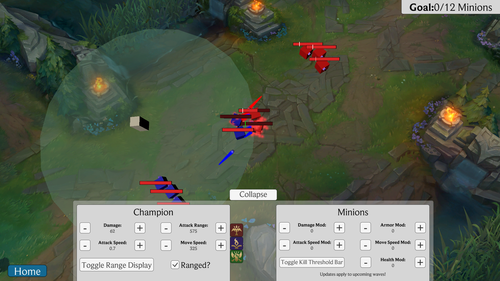
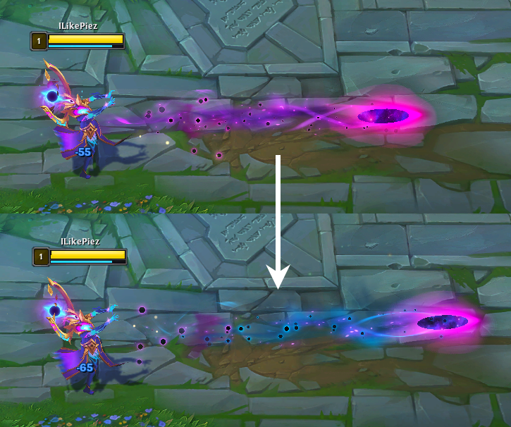

My Projects
Click the image to go to that project's page
Bee Defense
SDL2 2D Game Engine

This is the project I made for my 2D Game Development class! I call it Bee Defense! It uses SDL for drawing and completely original physics and entity systems. It's a tower defense game based on Bloons Tower Defense 6, but with bees and flowers!
Teemo Jump
Vulkan 3D Game Engine

This is a game engine written nearly from scratch in C with Vulkan and SDL2 for my special topics course at NJIT. I call it Teemo Jump! It's a 3D platforming game, similar to the 3D Mario Bros. games. The main requirements for this project were writing shaders, writing our own physics and collisions systems, figuring out a 2D pipeline to overlay on the screen, importing 3D models and getting them to animate, having powerups, as well as implementing an editor and saving/loading levels to/from JSON (and having Polish, of course).
League of Quake
Quake 4 Mod

This is a mod for the game Quake 4, putting a few League of Legends mechanics and abilities in the game. There are 5 different classes, each with two upgradable abilities. The player also gains experience and gold upon killing enemies. I had to repurpose code from Quake 4's multiplayer source code in order to bring up a buy menu, normally never possible in single player. This was my first project completed at NJIT and I'm very proud of it considering my lack of experience prior.
Minion Farming Simulator
Educational Minion Farmer
This is a project I worked on for my educational software design class at NJIT. Using Unity, I made a tool to educate what minions are, their purpose, and how to last hit them in League of Legends. Different from my game dev class projects, this one was designed first to be educational, second to be a game.
Current Modding Project
League of Legends per-chroma particle modding tool
There is no page for this project yet.
Currently a work-in-progress, this tool hopes to let a user mod in their own per-chroma particles. In League of Legends, there are many cosmetic skins. Some of these skins have "chroma"s. These chromas change the color of the base model and mostly every other texture used. However, they rarely change the colors of any particle emitters. This leads to some chromas clashing with their base particles and I don't think it looks very pleasing. While Riot Games probably keeps the particles the same for readability, I want to give the player the option of making their cosmetics look even better. Currently, this is written in python but I'm in the process of moving the code over to JavaScript for better front-end production. I've figured out the data structures for League of Legends particle emitters and currently have code that can extract the colors and keep a reference to where they are in the main skin file.